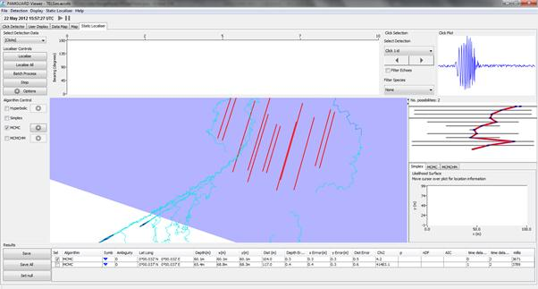

Figure 30. Can you think why MCMC might have this shape for a two element towed array?
There are several other examples of the MEAL localiser you can have a go with. Try the TEL database to localise using a well dispersed 12 hydrophone array.

Figure 29. Well dispersed 3D array can produce highly accurate localisation results.
Next have a play with towed array data. See what an MCMC localisation looks like.
Figure 30. Can you think why MCMC might have this shape for a two element towed array?